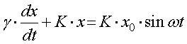
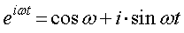
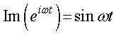
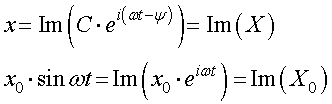
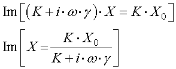

同様に，

を解きます． ここで，指数関数と三角関数との関係式を思い出しましょう．

つまり，指数関数の虚数項が正弦波となるのです． この虚数項，というものを式で， Im と表すことにしましょう． つまり，
 となります．
系に対して，正弦波を入力しているので，出力も何らかの正弦波となることは容易に想像できます． そこで，

と考えると，微分方程式は，

となります．
さて，次に右辺の分母を考えていきましょう．